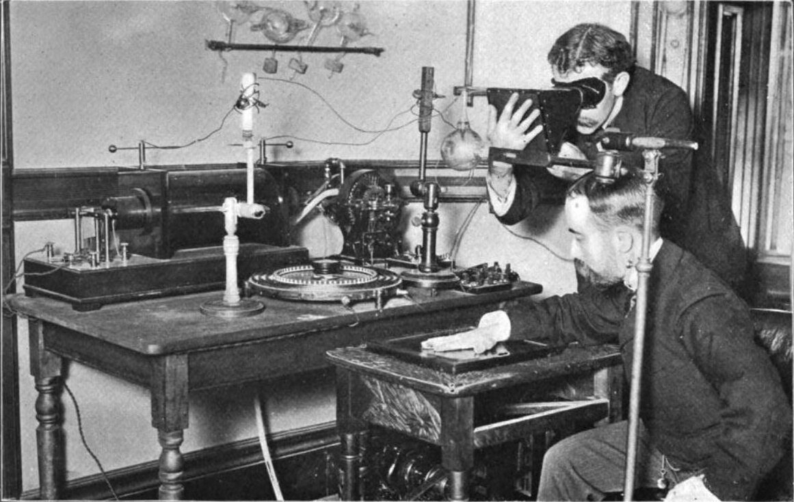

Український вчений Іван Пулюй став першим розробником рентгенівської трубки, яка є прототипом сучасних рентгенів. Відбулося це за 14 років до того, як Рентген Вільгельман анонсував світу схожий апарат. Але через те, що Пулюй не запатентував свою розробку – науковець не став офіційним винахідником рентгену. Проте, світова спільнота неодноразово підтверджувала, що саме українець започаткував розвиток цієї надважливої галузі. Зокрема, Альберт Ейнштейн висловлював аналогічну думку.
Всі сучасні ракети відриваються від землі завдяки українському винахіднику Сергію Корольову. Сьогодні його називають засновником космонавтики, адже саме завдяки його розробкам була запущена перша міжконтинентальна балістична ракета та перший штучний супутник Землі. Крім цього, під його безпосереднім керівництвом відбувся перший політ людини в космос. Цікаво й те, що перший ракетний двигун Корольов розробив попри постійні репресії з боку радянської влади та знущання функціонерів.
У 1931 році українець Ігор Сікорський винайшов та запатентував перший у світі вертоліт. Сьогодні ім’ям авіаконструктора названо Національний технічний університет України (КПІ). Перший прототип мав кабіну для пілота відкритого типу, ремінну передачу та двигун фірми Franklin. Вже у 1940 році Сікорський зміг підняти машину з пропелерами у повітря, та здійснити контрольований проліт. Першим замовником стали Сполучені Штати Америки, вони закупили гвинтокрили Сікорського для озброєння своєї армії. Пізніше український розробник став власником потужного концерну.